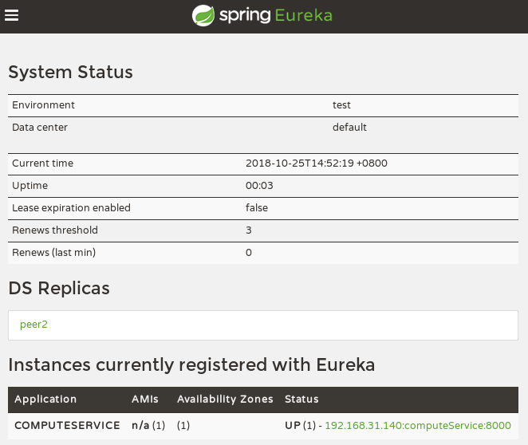
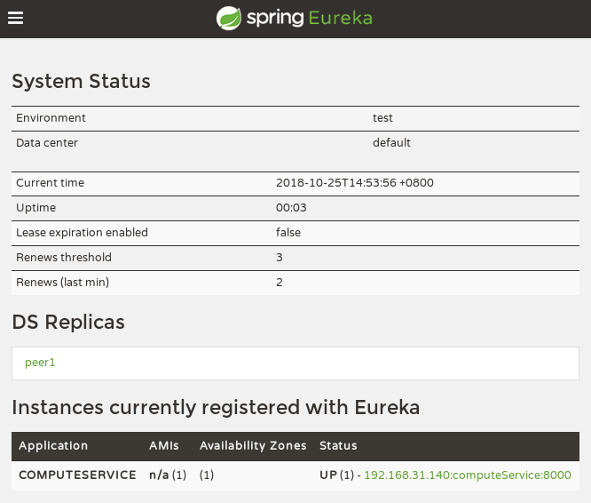
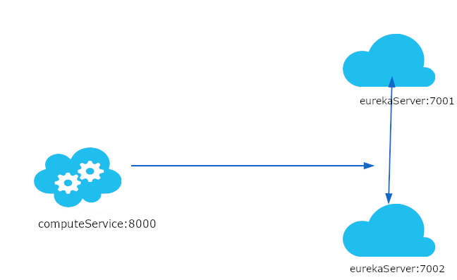

前记
一开始我们就创建了一个注册中心，但是当成千上万个服务向它注册的时候，它的负载是非常高的，这在生产环境上是不太合适的，这章将把 Eureka Server 集群化。
改造
在 eurekaService 工程的 resources 文件夹下，创建配置文件 application-peer1.properties:
1 | server.port=7001 |
创建配置文件 application-peer2.properties:
1 | server.port=7002 |
加完配置后修改 /etc/hosts，因为上面使用的是域名：
1 | 127.0.0.1 peer1 |
修改 computeService 中的配置 application.properties：
1 | eureka.client.service-url.defaultZone=http://peer1:7001/eureka/ |
依次启动 peer1、peer2、computeService：
1 | java -jar eurekaServer-0.0.1-SNAPSHOT.jar - -spring.profiles.active=peer1 |

peer1
可以看到 DS Replicas 下多了 peer2，computeService 也注册上了。

peer2
同样可以发现 peer1 和 computeService，也就是两台 eureka 成功集群。

eureka集群
peer1、peer2 相互感应，当有服务注册时，两个 eurekaServer 是对等的，它们都存有相同的信息，这就是通过服务器的冗余来增加可靠性，当有一台服务器宕机了，服务并不会终止，因为另一台服务存有相同的数据。
设置 IP 而不是域名
上面改造时还修改了 hosts，比较麻烦。
官网文档有说可以通过 eureka.instance.preferIpAddress=true 来设置 IP 让其他服务注册它。